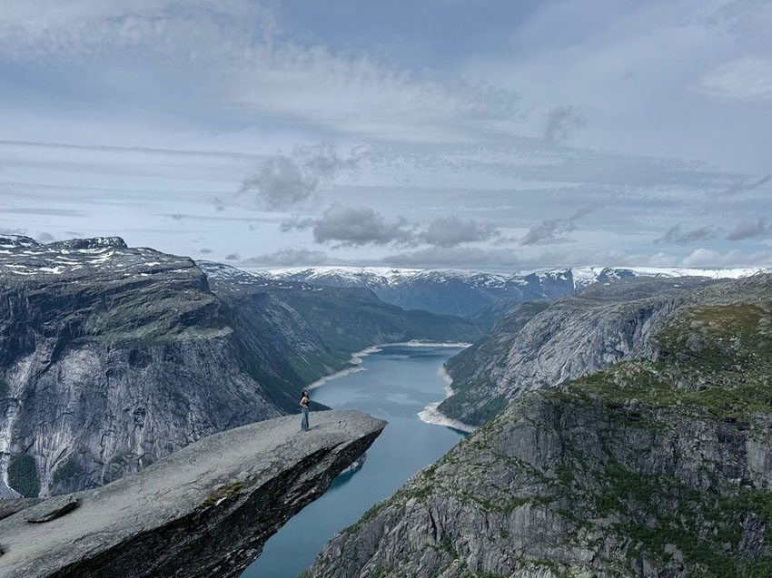
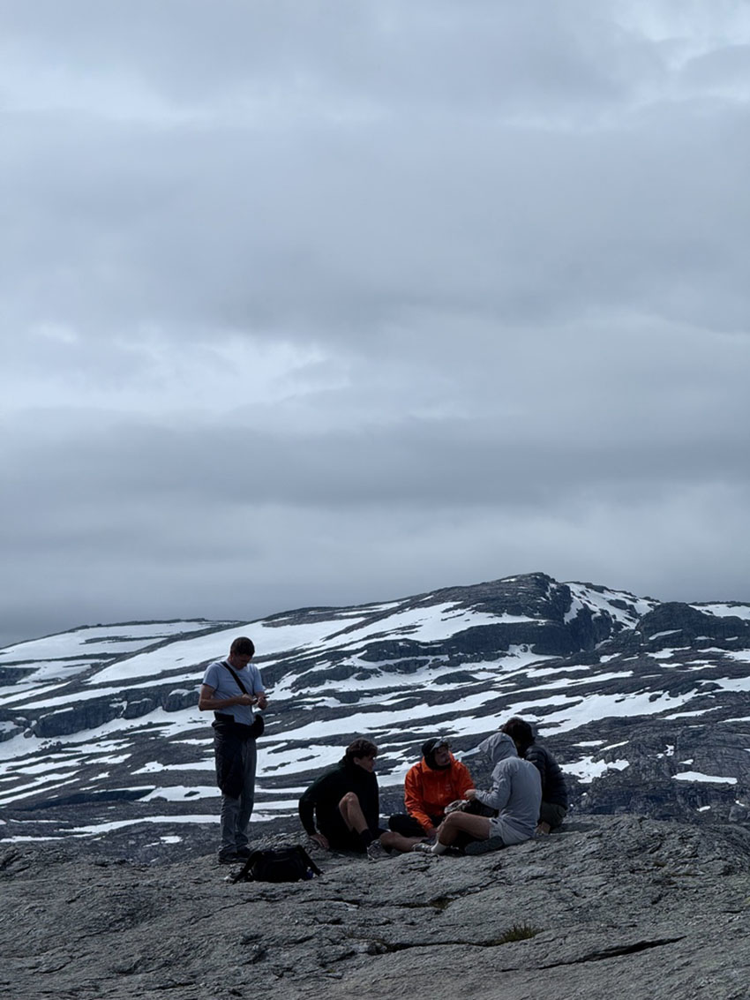
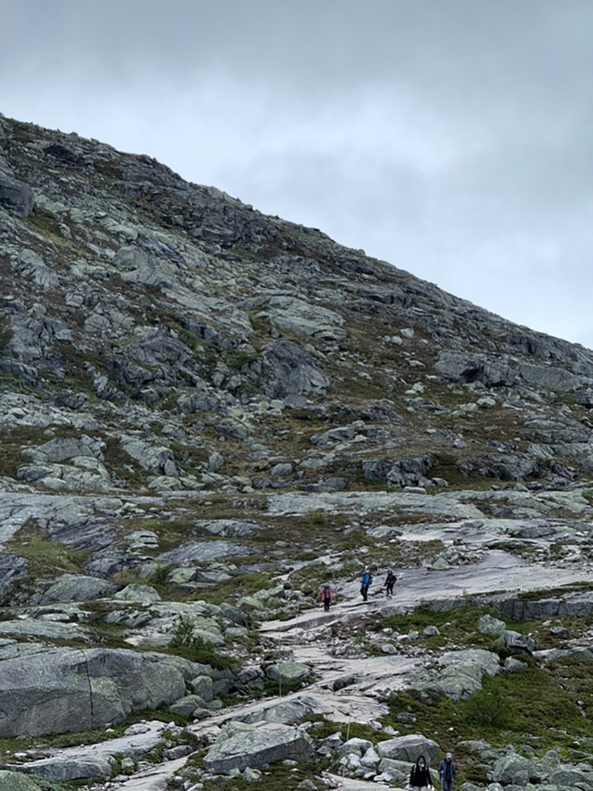

挪威三大奇岩之一山妖之舌（Trolltunga）
21公里徒步長征
楊欣儒│共同工程處＼法規驗證部
第一次踏上挪威的土地，第一次挑戰來回需耗時8小時的山。「山妖之舌Trolltunga（中音：搓湯嘎）」，挪威是滿是精靈神話的國度，字根Troll是挪威山妖的意思。挪威景觀主要以高山及峽灣為主，國境內由斯堪地納維亞山脈貫穿，因冰川侵蝕以及海水倒灌形成許多峽灣地形，而山妖之舌即是一處因冰川侵蝕而形成的奇特景觀。
在台灣不怎麼爬山的我，在朋友的半推半就下答應了這趟旅程，山友最喜歡說的一句話就是「下個轉彎就到了」，我想我朋友就是這樣拐騙帶著我上山的。把朋友的話當定心丸，「很平很好走，就只是長了點，只有一段巨石坡」。好的，我可以的！
山妖之舌有三個停車場，而P3最接近登山口，因位置有限，還得先在網路上預約才能進入，每台車600挪威克朗，約台幣1,800元。這個停車場可以比P1少走10公里！
● 七點零三分，登山口。
這次長征的景觀依序為：早晨7點刺眼太陽的沼澤草原，再來是3公里的萬惡巨石坡，接下來會經過一個又一個廣闊無樹的高山苔原，需要一直的越過盡頭的小山坡才能到達下一個苔原，再來是小巧的高山湖泊，之後再經過好幾輪與自己對話後，到達10.5公里處—山妖之舌。
絕望之爬的巨石坡，總共有3公里之長，一路陡上沒有喘息的空間，也是此趟最累最想放棄的地方，稍作休息時往回看，發現自己原來已經走了那麼多了，就像努力了好一陣子，雖然盡頭還很遠，但至少我們已經起步離開起點。
 |
| 抵達高山苔原，大概到了5公里，我們開始享用吃中餐，順帶減輕裝備，除了巨石坡較累人之外，整段路程不太會餓也不太會累，稍作休息即可繼續前進！ |
 |
| 在我們躍下某個山頭時，映入眼簾的是一片小巧的湖，還有遠方的雪山，路上甚至還有一些殘雪，爬山的時節是挪威的夏天，大概是15度。遠處的山友就站在那兒，倒影驅使我按下快門捕捉這一瞬間。 |
 |
| 大概是在9公里處，看見可愛的呆腦獸。 |
 |
| 還有一個被冰川侵蝕的山谷，因地勢較高，山谷裡全是高山溶雪，水清澈到能看見山的紋理出現在倒影裡。打開Google Maps，顯示山妖之舌就在對面山的那一區。 |
|  |
| 後續還有幾處陡下陡上，此時意志力已趨近極限，徒步的力量有限，回家後才發現這一段居然沒有留下任何影像！終於到達10.5公里處，抵達山妖之舌。由冰川切割出非常深的深谷，是那種靠近懸崖邊，腳會不受控制顫抖的那種，非常壯麗！ |
|  |
| 登頂的山友們席地而坐野餐、閒話家常，他們像極了正在拍攝形象照的戶外品牌服飾。
這趟旅程中並不是終點的樣子吸引我，而是途經的未預期的小事。 |
|  |
| 這張是回程時，我先往前衝了500公尺後回頭拍的旅伴們，人生如果一直都用同個速度行走，大概會很無聊吧！ |